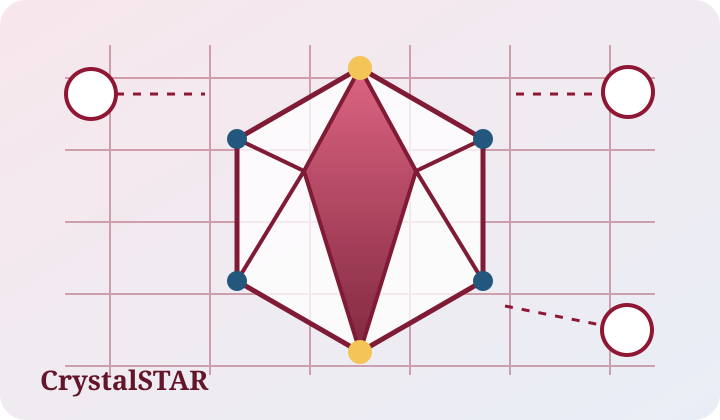
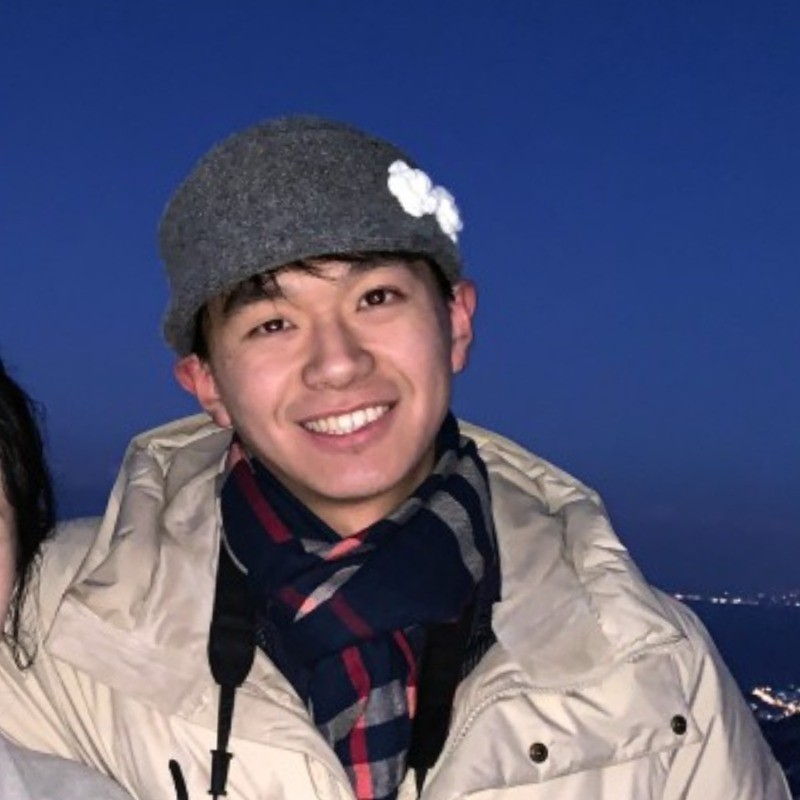
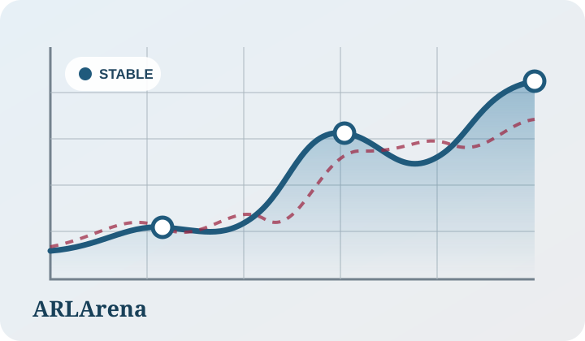
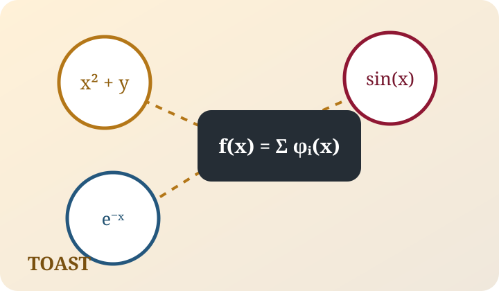

Chenyi Tong
M.S. Student @ University of Wisconsin–Madison
I am an M.S. student in Data Science at the University of Wisconsin–Madison, where I work with Prof. Xiao Luo. I received my B.S. in Mathematics from Wuhan University.
My research interests include LLM agents, agentic reinforcement learning, post-training and evaluation, and AI for Science. I am particularly interested in agents that can plan, use tools, learn from interaction, and support their outputs with verifiable evidence.
I have also collaborated with researchers at UCLA's Scalable Analytics Institute and worked on decision-making under uncertainty at HKUST.
I am applying to Ph.D. programs for Fall 2027.
Publications and Manuscripts


TOAST: Multi-Agent Collaborative System for Symbolic Regression
Manuscript, 2026
TLDR A collaborative multi-agent system for discovering concise symbolic expressions from data.
Research Experience
- 2025–PresentResearch Assistant, University of Wisconsin–Madison. LLM agents for scientific discovery, agentic post-training, and reliable research workflows. Advised by Prof. Xiao Luo.
- 2025–2026Research Collaborator, UCLA Scalable Analytics Institute. Evaluation pipelines and trajectory-level diagnostics for long-horizon agentic reinforcement learning.
- 2025Research Assistant, HKUST IEDA. Decision-making under uncertainty and scenario-based optimization for physician scheduling.
Selected Honors
- Outstanding Teaching Assistant, Wuhan University, 2024–2025
Academic Services
- Reviewer, NeurIPS Workshop on AI for Drug Discovery, 2026
- Teaching Assistant, MATH 234: Calculus—Functions of Several Variables, UW–Madison, Fall 2026
- Course Grader, MATH 535: Mathematical Methods in Data Science, UW–Madison, 2025–2026
- Teaching Assistant, C Programming, Wuhan University, 2024–2025
Miscellaneous
I am interested in building reliable agents that can assist scientific discovery and research. I am always happy to discuss research ideas and potential collaborations.